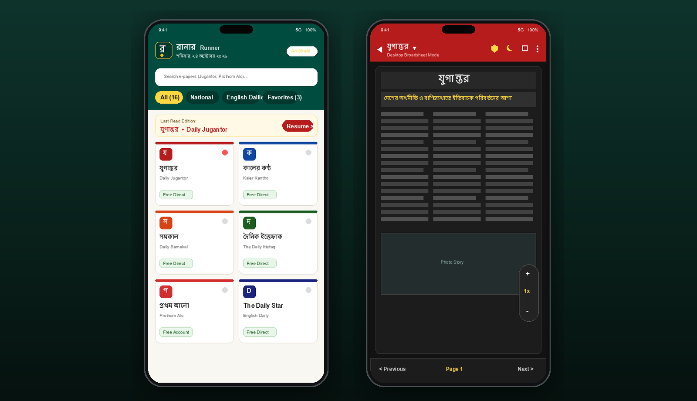

Sugar-Sweetened Beverage (SSB) Taxation & Packaging Compliance
National multi-component health policy study investigating fiscal excise taxes, front-of-pack labeling (FoPL), and consumer risk. Structured around three core workstreams: 1) National Household Survey, 2) Food-EPI Policy Review, and 3) Commercial Pack Analysis. One policy brief published; two full research papers currently in progress.
Household Survey
Food-EPI Review
Pack Risk Analysis
OLS Modeling
Policy Briefs
KoboToolbox